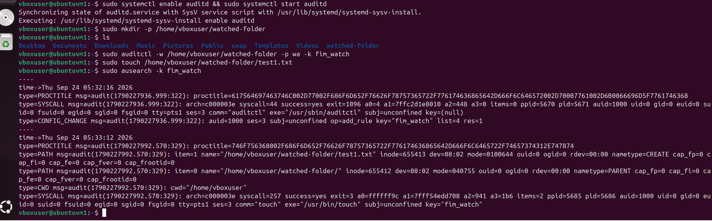
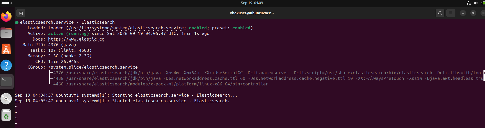
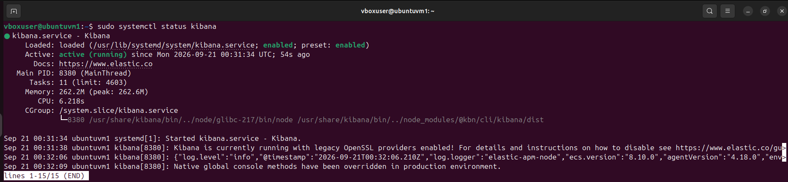
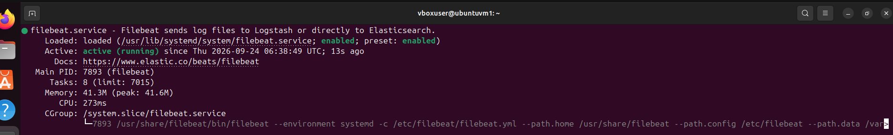
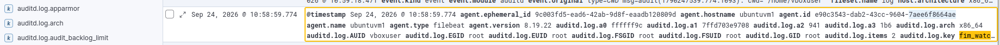
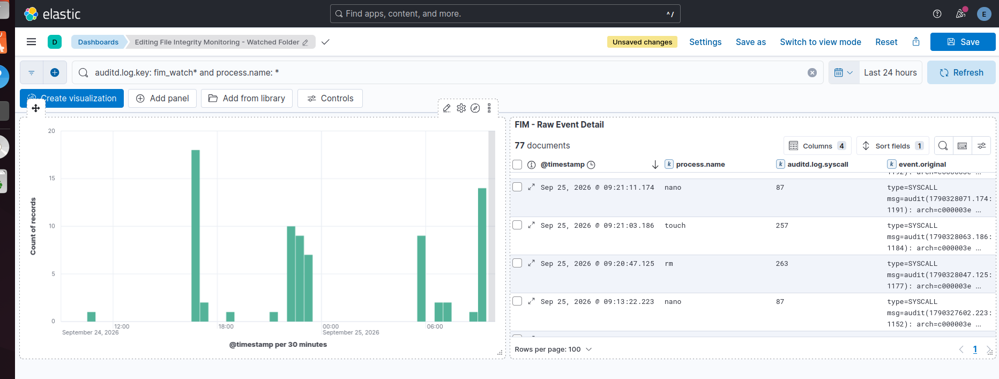

Summary
This case documents building a working File Integrity Monitoring (FIM) pipeline end to end: a Linux audit rule watching a specific folder for writes and attribute changes, a shipping layer parsing and forwarding those events, and a visualization layer turning raw audit log lines into a queryable, near-real-time dashboard. The finished dashboard distinguishes between different real file actions — creating a file, editing one in a text editor, and deleting one — rather than just showing an undifferentiated event count.
Environment
- Ubuntu Server VM (the same environment recovered in Case 002), running locally in VirtualBox
- auditd for kernel-level file watch rules
- Elasticsearch 9.5.4 and Kibana for storage, indexing, and visualization
- Filebeat with the auditd module enabled, to parse and ship audit log events
Watching the folder
The first step was a kernel-level audit rule watching a specific directory for writes and attribute changes, tagged with a custom key so its events are easy to isolate later:
sudo auditctl -w /home/vboxuser/watched-folder -p wa -k fim_watch sudo touch /home/vboxuser/watched-folder/test1.txt sudo ausearch -k fim_watch
The resulting audit record confirmed the rule was catching real activity at the kernel level before any of the ELK tooling was even involved — a file creation (nametype=CREATE) on the exact watched path, tagged with the fim_watch key:

Standing up the ELK stack
With Elasticsearch and Kibana already recovered and stabilized in Case 002, both services were confirmed healthy before layering the FIM pipeline on top:


Shipping events with Filebeat
Filebeat, with its built-in auditd module, is responsible for reading audit log entries and shipping them into Elasticsearch in a structured, queryable form:
sudo apt install filebeat -y sudo filebeat modules enable auditd sudo systemctl enable filebeat && sudo systemctl start filebeat

auditd module was not enough on its own. Filebeat's logs showed a specific, easy-to-miss error — "module auditd is configured but has no enabled filesets" — meaning the module was recognized but its actual log fileset was still disabled underneath it. The fix required explicitly setting enabled: true inside /etc/filebeat/modules.d/auditd.yml, restarting Filebeat, and only then did real file events start reaching Elasticsearch. Before this fix, only unrelated configuration-change events were visible — everything looked connected, but the actual file-activity data was silently never leaving the source.Once fixed, individual events could be confirmed directly in Kibana's Discover view, tagged correctly with the fim_watch key:

Building the dashboard
The finished dashboard combines a time-based trend of file activity with a detailed event table, so it answers both "when did activity spike" and "what exactly happened." To make the table meaningful, it needed to distinguish between different real actions rather than lump everything into one count — so the test activity included creating a file (touch), editing one (nano), and removing one (rm):

The table panel resolves each event down to its process name and syscall, meaning a reviewer can see not just that something changed, but specifically how — a file was created with touch, modified with nano, or removed with rm — which is the actual point of file integrity monitoring: distinguishing ordinary activity from something that warrants a closer look.
Lessons learned
The biggest lesson from this project wasn't about auditd, Filebeat, or Kibana individually — it was that a pipeline can look fully connected at every stage (every service reporting "active, running") while still silently dropping the one thing it's supposed to be doing, because of a setting one layer deeper than where the obvious status check looks. Enabling a module is not the same as enabling what's inside it. The fix was straightforward once found, but finding it required checking the actual source data (ausearch) against what was landing in Elasticsearch, rather than trusting that a "running" status meant "working correctly."